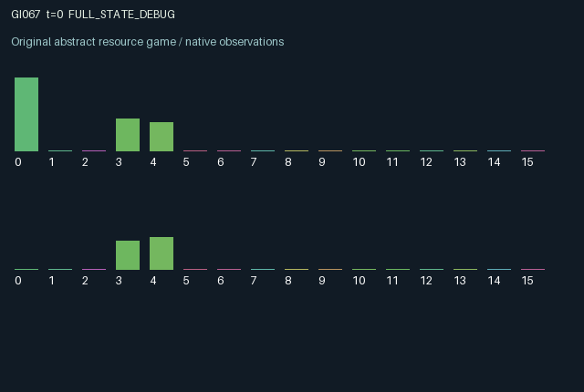

GI067 / LEGACY_ARRAY
astra-d2-00067: historical audits with version-bound private evidence
2 agents5 actions16 observation columns32 original horizonRuntime: PASS
Release verification episode
Untrained uniform legal actions. Actual JAX state sampled along the full original episode; full-state debug camera. No human performance or learning claim.

Run this game
crucibles play --game 67
Start Python locally, then open the address printed by the terminal. Installation, multiplayer, takeover and keyboard controls →
Objective, rewards & ending
Exact task contract
{
"objective": "Accumulate original per-agent rewards under the interaction rules in mechanism.md.",
"natural_termination": "No early terminal; original t >= 32 horizon.",
"exact_transition_and_reward_source": "def raw_step(self, key, state, actions):\n other_report = jnp.roll(state[\"report\"], 1)\n other_secret = jnp.roll(state[\"secret\"], 1)\n other_version = jnp.roll(state[\"version\"], 1)\n reporting = (actions == 1) | (actions == 2)\n audit = (actions == 3) & (other_report >= 0)\n trade = (actions == 4) & (other_report >= 0)\n evidence_valid = (state[\"evidence\"] >= 0) & (state[\"evidence_version\"] == other_version)\n prediction = jnp.where(evidence_valid, state[\"evidence\"], other_report)\n correct = prediction == other_secret\n stake = 0.2 + 0.6 * jnp.roll(state[\"trust\"], 1)\n trading_return = trade.astype(jnp.float32) * jnp.where(correct, 0.55, -0.65) * stake\n sender_fee = jnp.roll(trade.astype(jnp.float32) * jnp.where(correct, 0.06, 0.30) * stake, 1)\n truthful_snapshot = state[\"snapshot_truth\"] == state[\"snapshot_report\"]\n audit_adjustment = state[\"pending_audit\"].astype(jnp.float32) * jnp.where(truthful_snapshot, 0.14, -0.22)\n next_trust = jnp.clip(0.92 * state[\"trust\"] + 0.04 + jnp.roll(audit_adjustment, 1), 0.0, 1.0)\n next_evidence = jnp.where(state[\"pending_audit\"], state[\"snapshot_truth\"], state[\"evidence\"])\n next_evidence_version = jnp.where(state[\"pending_audit\"], state[\"snapshot_version\"], state[\"evidence_version\"])\n refreshed = jnp.roll(trade, 1)\n replacement_secrets = jax.random.randint(key, (2,), 0, 2, dtype=jnp.int32)\n next_secret = jnp.where(refreshed, replacement_secrets, state[\"secret\"])\n next_version = state[\"version\"] + refreshed.astype(jnp.int32)\n next_report = jnp.where(refreshed, -1, jnp.where(reporting, actions - 1, state[\"report\"])).astype(jnp.int32)\n next_age = jnp.where(refreshed | reporting, 0, jnp.minimum(state[\"age\"] + 1, 8)).astype(jnp.int32)\n next_snapshot_truth = jnp.where(audit, other_secret, state[\"snapshot_truth\"])\n next_snapshot_report = jnp.where(audit, other_report, state[\"snapshot_report\"])\n next_snapshot_version = jnp.where(audit, other_version, state[\"snapshot_version\"])\n last_result = jnp.where(trade, jnp.where(correct, 1.0, -1.0), 0.0)\n rewards = jnp.tanh(\n trading_return + sender_fee - 0.035 * audit.astype(jnp.float32)\n - 0.012 * reporting.astype(jnp.float32)\n ).astype(jnp.float32)\n next_state = {\n \"t\": state[\"t\"] + jnp.array(1, dtype=jnp.int32),\n \"secret\": next_secret.astype(jnp.int32),\n \"report\": next_report,\n \"version\": next_version.astype(jnp.int32),\n \"age\": next_age,\n \"trust\": next_trust.astype(jnp.float32),\n \"evidence\": next_evidence.astype(jnp.int32),\n \"evidence_version\": next_evidence_version.astype(jnp.int32),\n \"pending_audit\": audit.astype(jnp.bool_),\n \"snapshot_truth\": next_snapshot_truth.astype(jnp.int32),\n \"snapshot_report\": next_snapshot_report.astype(jnp.int32),\n \"snapshot_version\": next_snapshot_version.astype(jnp.int32),\n \"last_result\": last_result.astype(jnp.float32),\n \"last_fee\": sender_fee.astype(jnp.float32),\n }\n done_all = next_state[\"t\"] >= 32\n dones = jnp.full((2,), done_all, dtype=jnp.bool_)\n info = {\"done_all\": done_all, \"legal_mask\": self.legal_actions(next_state)}\n return self.observe(next_state), next_state, rewards, dones, info"
}Declared per-step reward bounds: -1.0 to 1.0. Observability: source_defined.
Rules
Original mechanism document (historical status wording retained)
# astra-d2-00067: historical audits with version-bound private evidence This parentless source proposes a signaling market in which each agent owns a private binary secret and may publish either binary statement about it. The other agent can transact using that statement or commission an audit. Audits preserve a snapshot of the statement, underlying truth and secret version. Their later reputational consequences survive consumption of the statement, while their factual evidence becomes unusable when that secret version expires. This is intentionally related to generic cheap talk, fraud incentives, reputation, delayed verification and consumable private information. No consulted benchmark or parent source is involved, and novelty or nonisomorphism is not asserted. Actions are 0 wait, 1 publish zero, 2 publish one, 3 audit the partner's current statement, and 4 transact on it. All actions are legal; audit and trade have no transaction when the partner has no statement. Decisions use pre-step statements and evidence. A trade predicts the partner's secret with valid private audit evidence if available, otherwise with the public statement. Its stake is 0.2 plus 0.6 times the partner's current trust. A correct prediction produces a 0.55-times-stake return and a 0.06-times-stake sender fee. An incorrect prediction loses 0.65 times stake and grants the sender 0.30 times stake. Thus misleading an uninformed counterpart can increase the sender's current fee, but weakens reputation if audited. A trade consumes the partner's old information item. That partner receives a newly keyed random secret, its version increments, and its public statement is cleared. Simultaneous republication by the consumed party is discarded, although its publication charge is still paid: it cannot make an informed statement about a secret not yet sampled. Both trades may occur simultaneously. New secrets are the only step randomness. An audit request captures the old statement and truth immediately but exposes no truth in that returned observation. The pending snapshot resolves on the following transition, updating the auditor's private evidence and the statement owner's public trust. Trading on the resolution transition still uses previously delivered evidence; the new evidence is usable from the next decision. Honest snapshots add 0.14 trust and dishonest ones subtract 0.22; trust also drifts toward 0.5 and is clipped to [0,1]. Historical audits still affect trust if consumption or republication intervenes. Evidence must match the partner's current version to override a statement, so auditing an old item does not reveal a replacement secret. Pending audit requests are public; their private snapshots and delivered evidence are not shared. Observation columns 0..15 are own secret; own and partner public statements encoded as 0 for absent, 0.5 for zero and 1 for one; own/partner trust; own/partner statement age divided by 8; own delivered evidence in the same absent/zero/one encoding; its validity indicator; own/partner pending-audit indicators; own/partner secret versions divided by 32; own last transaction result (-1, 0, or 1); own received sender fee divided by 0.24; and elapsed time divided by 32. Statement age saturates at eight and is descriptive rather than a direct reward term. The partner's secret and private audit evidence are hidden. Both agents change future opportunities and incentives through their persistent statements, audits of the other agent, consumption-triggered secret renewal, and reputational effects. Reward is tanh of the agent's trading return plus received sender fee minus 0.035 per actual audit and 0.012 per publication action. The tanh bounds finite utilities in [-1,1]. The specified interface is A2/O16/U5 with an initialized fixed-shape array dictionary, one clock increment per transition, and terminal flags and preserved terminal observation at time 32. Only source construction and documentation are asserted. There is no execution, compilation, mechanism-eligibility, duplicate-review or learning-effectiveness result from this author.
Commands
0Wait
1Report 0
2Report 1
3Audit partner report
4Trade on report
Roles & abilities
agent_0 Original legacy agent; see mechanism and source
agent_1 Original legacy agent; see mechanism and source
Observation permissions
Training receives only the original observation rows. Role cameras use declared visibility; debug cameras are explicitly marked. Local benchmark records log debug exposure and role takeover history.
Exact observation layout
[
{
"slice": [
0,
16
],
"visibility": "exact original observe() below",
"source_code": "def observe(self, state):\n evidence_valid = (state[\"evidence\"] >= 0) & (state[\"evidence_version\"] == jnp.roll(state[\"version\"], 1))\n obs = jnp.zeros((2, 16), dtype=jnp.float32)\n obs = obs.at[:, 0].set(state[\"secret\"].astype(jnp.float32))\n obs = obs.at[:, 1].set((state[\"report\"].astype(jnp.float32) + 1.0) / 2.0)\n obs = obs.at[:, 2].set((jnp.roll(state[\"report\"], 1).astype(jnp.float32) + 1.0) / 2.0)\n obs = obs.at[:, 3].set(state[\"trust\"])\n obs = obs.at[:, 4].set(jnp.roll(state[\"trust\"], 1))\n obs = obs.at[:, 5].set(state[\"age\"].astype(jnp.float32) / 8.0)\n obs = obs.at[:, 6].set(jnp.roll(state[\"age\"], 1).astype(jnp.float32) / 8.0)\n obs = obs.at[:, 7].set((state[\"evidence\"].astype(jnp.float32) + 1.0) / 2.0)\n obs = obs.at[:, 8].set(evidence_valid.astype(jnp.float32))\n obs = obs.at[:, 9].set(state[\"pending_audit\"].astype(jnp.float32))\n obs = obs.at[:, 10].set(jnp.roll(state[\"pending_audit\"], 1).astype(jnp.float32))\n obs = obs.at[:, 11].set(state[\"version\"].astype(jnp.float32) / 32.0)\n obs = obs.at[:, 12].set(jnp.roll(state[\"version\"], 1).astype(jnp.float32) / 32.0)\n obs = obs.at[:, 13].set(state[\"last_result\"])\n obs = obs.at[:, 14].set(state[\"last_fee\"] / 0.24)\n obs = obs.at[:, 15].set(state[\"t\"].astype(jnp.float32) / 32.0)\n return obs"
}
]Entity visibility & attributes
[]
Actual verification & provenance
Per-game execution receipt
{
"game": "gi067",
"status": "PASS",
"verification_revision": 2,
"source_sha256": "971c87de258efcb72c2a0b27b6d78ca1d93c7de0c4a85c2e9c5feb63d3137837",
"seed": 20261101,
"runtime": {
"jax": "0.4.38",
"numpy": "1.26.4",
"devices": [
"TFRT_CPU_0"
]
},
"dimensions": {
"num_agents": 2,
"observation_size": 16,
"num_actions": 5,
"max_steps": 32
},
"checks": {
"eager_reset": {
"status": "PASS",
"seconds": 1.0219550132751465
},
"observation_spaces_legal_masks": {
"status": "PASS",
"seconds": 0.1460578441619873
},
"eager_step": {
"status": "PASS",
"seconds": 0.5980453491210938
},
"jit_reset": {
"status": "PASS",
"seconds": 0.5915164947509766
},
"jit_step": {
"status": "PASS",
"seconds": 0.3386988639831543
},
"eager_jit_integer_parity_float_measurement": {
"status": "PASS",
"seconds": 0.0009019374847412109
},
"jit_vmap_reset": {
"status": "PASS",
"seconds": 0.7104554176330566
},
"jit_vmap_step": {
"status": "PASS",
"seconds": 0.5883946418762207
},
"outer_autoreset_api": {
"status": "PASS",
"seconds": 1.3824489116668701
},
"full_original_horizon_episode_and_render": {
"status": "PASS",
"seconds": 2.3586816787719727
}
},
"human_scores": null,
"browser_controls": "PENDING",
"failures": [],
"elapsed_seconds": 8.215256929397583,
"float_parity_max_abs": 0.0,
"numerical_parity": "EXACT",
"raw_terminal_absorbing": "NOT_PART_OF_ORIGINAL_LEGACY_CONTRACT",
"terminal_outer_reset": "PASS",
"episode_steps": 32,
"scripted_random_returns": [
0.08881239732727408,
1.0856050900183618
],
"terminal": true,
"demo_information": "FULL_STATE_DEBUG",
"demo_frames": 33,
"render_roles_checked": 2
}Chromium control verification
{
"game": "gi067",
"status": "PASS",
"human_scores": null,
"engineering": true,
"checks": [
"catalog_selected_and_real_native_reset",
"dom_queue_and_native_step",
"second_participant_ownership_and_native_joint_step",
"all_roles_individually_controllable_no_role_cap",
"explicit_debug_camera",
"release_to_pure_ai_without_reset"
],
"ui_sha256": "15b5861d23b3c42811865c954d5a988280bbfd21cf8e93754be2437a027158c5",
"seconds": 3.052943706512451
}Original identity and file hashes
{
"id": 67,
"key": "gi067",
"title": "astra-d2-00067: historical audits with version-bound private evidence",
"summary": "",
"tags": [],
"family": "legacy_array",
"dimensions": {
"num_agents": 2,
"observation_size": 16,
"num_actions": 5,
"max_steps": 32
},
"source_sha256": "971c87de258efcb72c2a0b27b6d78ca1d93c7de0c4a85c2e9c5feb63d3137837",
"manifest_sha256": "39eacd1fcf1ce4f883a0986e220a54f0362f93dc6b4d51f0773b45c50edc93f7",
"files": [
{
"file": "candidate.py",
"sha256": "971c87de258efcb72c2a0b27b6d78ca1d93c7de0c4a85c2e9c5feb63d3137837",
"bytes": 6158,
"origin": "work/exp_2/astra_generation/discovery_v2/initial/candidate_00067/attempt_00/candidate.py"
},
{
"file": "mechanism.md",
"sha256": "6f39d8fa232cc8f2912c164f46945cf35a4ee5f34a97947885ad0298973037ba",
"bytes": 4110,
"origin": "work/exp_2/astra_generation/discovery_v2/initial/candidate_00067/attempt_00/mechanism.md"
}
],
"original_status": "LEGACY_SOURCE",
"original_saved_replay": false,
"release_validation": "PASS",
"human_scores": null,
"browser_validation": "PASS"
}